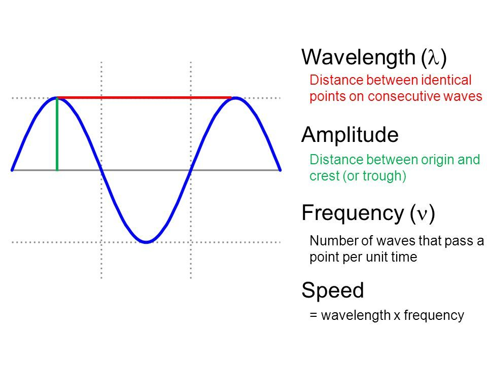
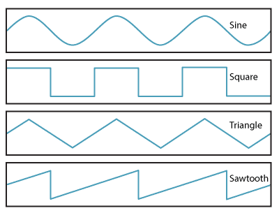

Well if you go to custom page. there you can select the amputee and frequency. To define it here is a picture cuz a picture speak 1000 word and i am to lazy to write it down.

wave type
There are 4 wave type did you know that i didnt know that so here a image of all 4 type of sound wave and also you can select your wised wave type in custom.
